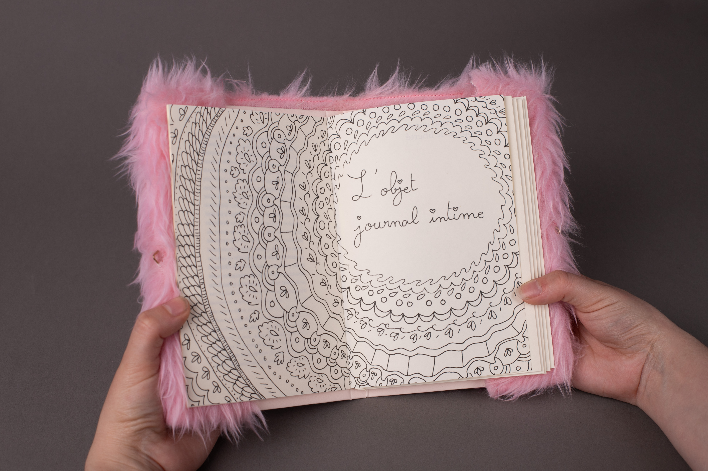
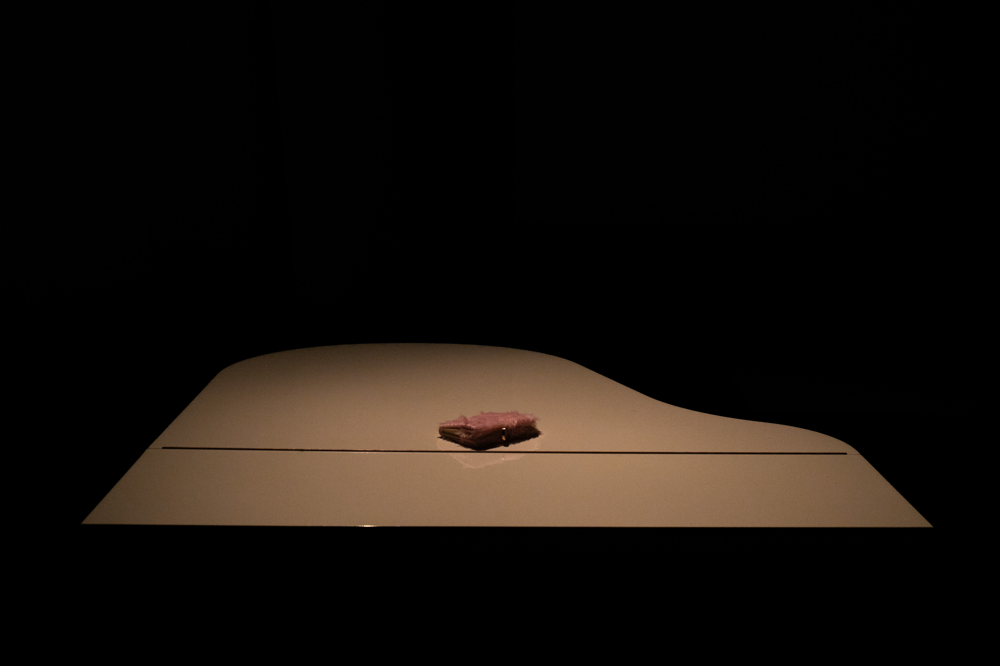
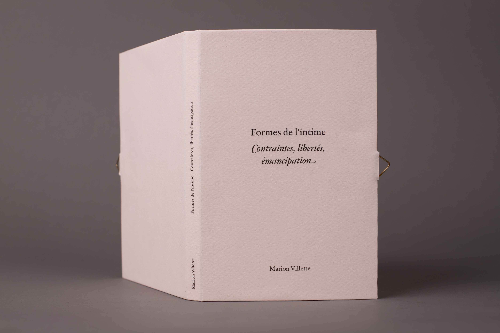
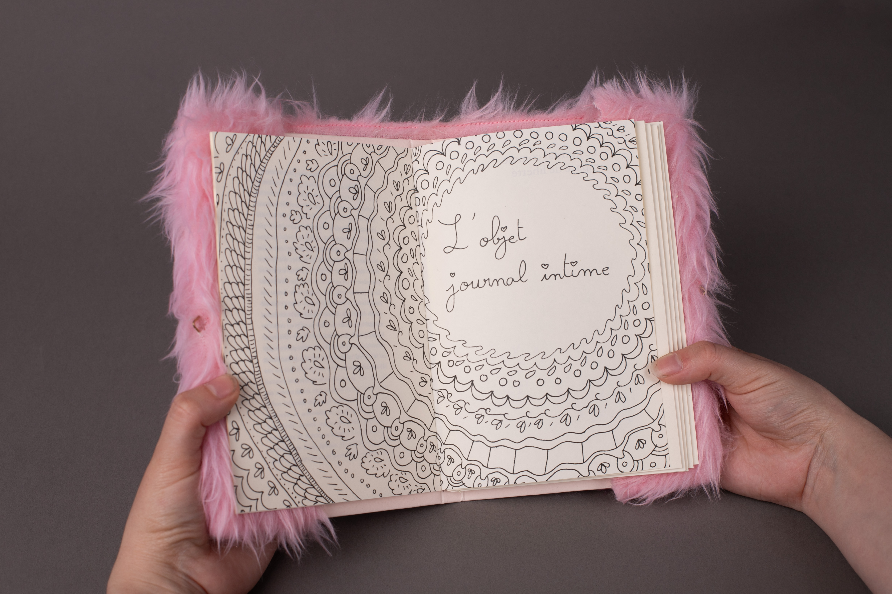
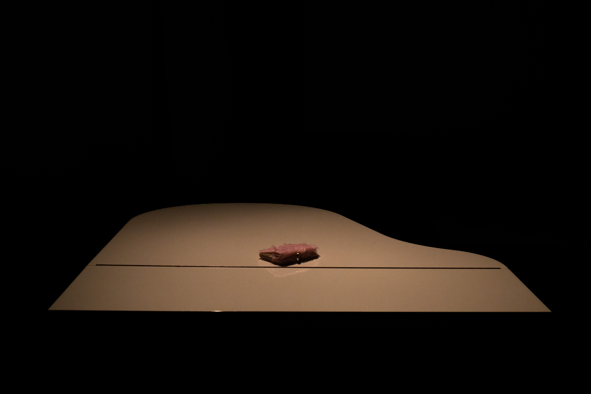
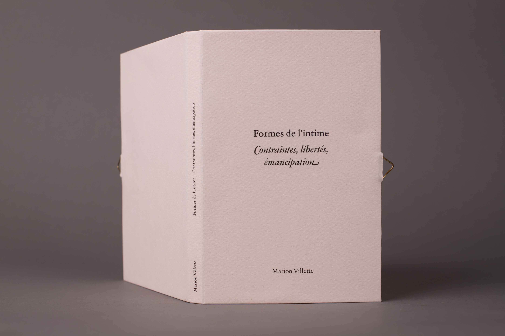

Contraintes, Libertés, Émancipation
Enfantin, futile, kitsh avec éclat, lourd de milliers de mots, frénétique, dense, j’explore sans retenue le journal intime dans tous ses états, ses pages papier ou web, son diariste, son lecteur et comment s'est jouée et se joue encore sa position à l'échelle culturelle et sociétale.
L'édition et la fabrication de l'objet ont entièrement été réalisées à la main.

 




